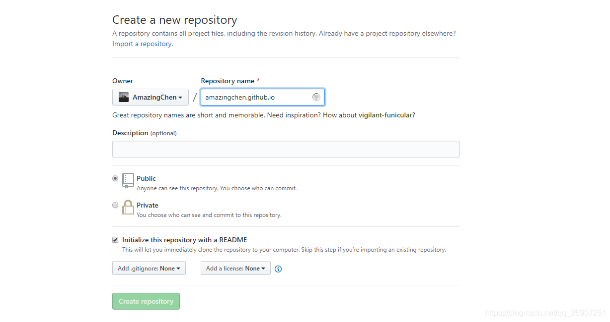

使用Github Pages搭建个人博客
来源：https://www.cnblogs.com/sqchen/p/10757927.html
暂未获得作者授权且不知道是否允许转载，如有侵权请联系gcv8040@qq.com。
一、环境准备
使用Github Pages搭建个人博客，一劳永逸，可以让我们更加专注于博客的撰写。博客的更新是通过将新建或改动的博客放在指定文件夹并推送到远程Github仓库来完成的，所以我们本地需要有Git环境，如果还没有安装Git，可以看下面的文章：
二、搭建博客
1、新建仓库

以username.github.io作为仓库名字。
2、本地克隆
本地创建文件夹，用于存放远程仓库，打开所创建的文件夹，右键选择git bash here，表示在当前目录打开git bash程序，然后执行如下命令，将刚才创建的仓库克隆到本地：
git clone https://github.com/AmazingChen/amazingchen.github.io.git
如果步骤1中创建仓库时，没有勾选Initialize this repository with a README，将有如下提示：
warning，可以忽略，或手动在远程仓库创建一个readme.md，然后重新clone。
3、新建主页
在仓库文件夹下创建index.html：
1 | <!DOCTYPE html> |
4、推送到远程仓库
在仓库文件夹下，右键选择git bash here，然后执行命令：
1 | git add --all |
5、验证
成功push到远程仓库后，访问 username.github.io，看到如下界面，就表示成功通过Github Pages搭建了个人的博客。
三、更换主题
上面裸奔的博客主页，跟原始人类一样，你一定不满意，我们穿越几千年文明，直接站在巨人的肩膀上，选一套主题吧。
Github Pages基于Jekyll构建，**Jekyll** 可以帮助我们把纯文本转换为静态博客网站，实现一劳永逸。
你可以在JekyllThemes找到喜欢的主题，也可以在其他地方找。
“I want you, Vno-Jekyll.” 我选择Vno。
1、下载主题
下载后，首先将我们仓库文件夹下的文件清空，但是要保留.git文件夹：
然后将下载的主题压缩包解压到仓库文件夹下，结果如下：

访问 Jekyll-目录结构 详细了解每个文件夹的功能：
1 | ├── _config.yml |
2、搭建Jekyll环境
只有主题文件是不够的，我们需要搭建Jekyll环境，通过遵循Jekyll的规范，让Jekyll帮助我们生成静态网站。
（1） 安装Ruby：Ruby安装教程
注：需要安装带有devkit的版本哦！
（2）打开CMD，执行命令安装Jekyll：
gem install jekyll
（3）进入仓库文件夹，执行命令：
bundle install
注意，必须进入仓库文件夹下再执行上述命令，否则会有如下提示，表示bundle找不到gemfile文件：
Rails 3中引入Bundle来管理项目中的所有Gem依赖，该命令只能在一个含有Gemfile的目录下执行，
bundle install命令将尝试更新系统中已存在的gem包。更多参考：bundle install 命令
（4）启动Jekyll服务
bundle exec jekyll serve
启动Jekyll服务时，可能会遇到如下错误：
1 | while converting 'css/main.scss': |
很明显，是编码问题，参考网上方法解决 Invalid GBK character “\xE2” 过程中的发现，找到D:\RailsInstaller\Ruby2.3.3\lib\ruby\gems\2.3.0\gems\sass-3.7.2\lib\sass.rb文件，在require后追加：
Encoding.default_external = Encoding.find('utf-8')
然后重新启动Jekyll服务，看到如下打印，表示启动成功：
（5）验证
访问 http://127.0.0.1:4000，当你发现你的博客首页从一个原始人变成光鲜亮丽的现代人时，表示博客主题已经应用成功了。
（6）推送到远程仓库
做完上述操作后，由于还没有将修改提交到远程仓库，所以当你访问username.github.io时，你看到的还是一个光溜溜的原始人，执行以下命令完成进化吧皮卡丘：
1 | git add . |
成功推送到远程仓库后，等待几分钟，访问username.github.io，OK，成功。天黑请闭眼，有问题请留言。
四、发布博客
在仓库文件夹下，进入_posts目录，所有的文章都必须放在_posts文件夹下，访问 Jekyll-目录结构 详细了解每个文件夹的功能。
以markdown文档为例，按照如下格式创建md文件。
yyyy-MM-dd-filename.md
完成后push到远程仓库，即可完成更新。
五、修改主题
将网站的信息改成自己的，修改_config.yml文件：
1 | # Basic |
如果你对这套主题不太满意，并且具备web基础，可以动手修改。
如果不想博客数据被人轻易获取，建议将github仓库设置为私有。
修改之后，我的博客长这样：陈贤靖
完。